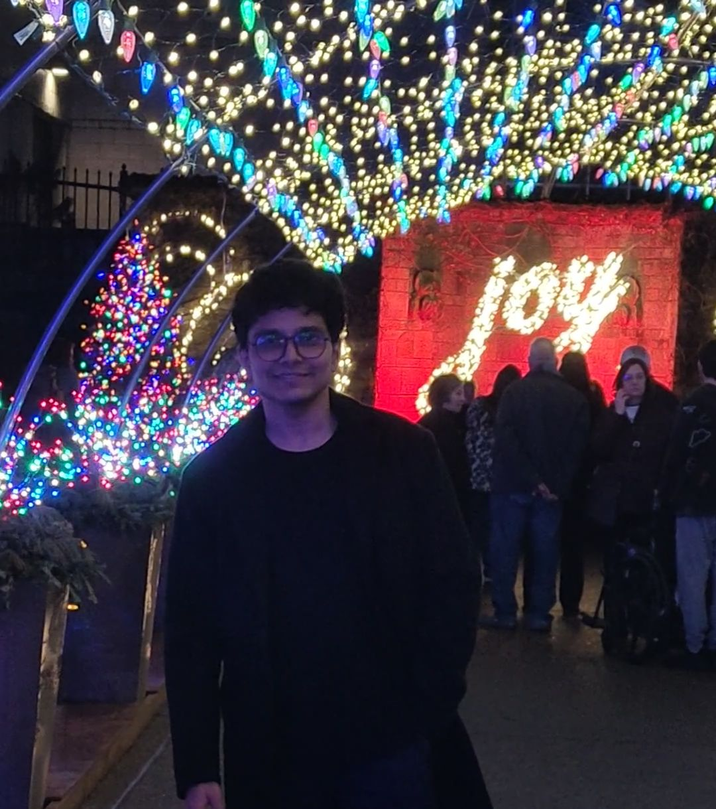

|
I am a staff research scientist at Google Research, where I work on computer vision and machine learning. At Google I've worked on Portrait Light, Lens Blur, HDR+, Jump, Portrait Mode, and Glass. I did my PhD at UC Berkeley, where I was advised by Jitendra Malik and funded by the NSF GRFP. I did my bachelors at the University of Toronto. I've received the C.V. Ramamoorthy Distinguished Research Award and the PAMI Young Researcher Award. |
 |
|
I'm interested in computer vision, machine learning, optimization, and image processing. Much of my research is about inferring the physical world (shape, motion, color, light, etc) from images. |

|
Jonathan T. Barron, Ben Mildenhall, Matthew Tancik, Peter Hedman, Ricardo Martin-Brualla, Pratul Srinivasan ICCV, 2021 (Oral Presentation) project page / arXiv / video / code NeRF is aliased, but we can anti-alias it by casting cones and prefiltering the positional encoding function. |

|
Lin Yen-Chen, Pete Florence, Jonathan T. Barron, Alberto Rodriguez, Phillip Isola, Tsung-Yi Lin IROS, 2021 project page / arXiv / video Given an image of an object and a NeRF of that object, you can estimate that object's pose. |
|
|


{kind=link}
|
Feel free to steal this website's source code,
just add a link back to my website.
Do not scrape the HTML from the deployed instance of this website at http://jonbarron.info,
as it includes analytics tags that you do not want on your own website — use the github code instead.
If you'd like your new page linked to from here, submit a pull request adding yourself.
|